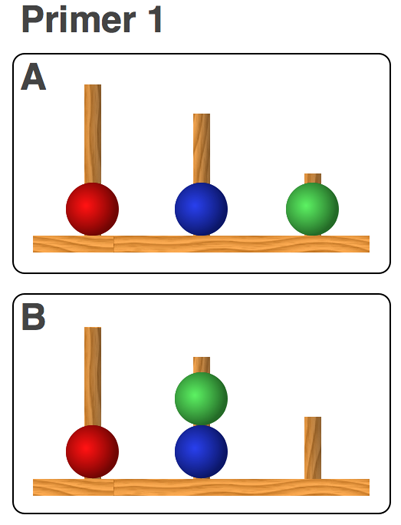
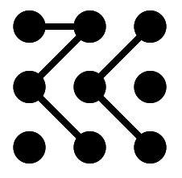

<!DOCTYPE html>
<html>

     <head>
        <meta charset="utf-8"/>
        <title>GEQ and TLI</title>
        <!-- jQuery -->
        <script src="http://ajax.googleapis.com/ajax/libs/jquery/1.11.1/jquery.min.js"></script>
        <!-- this plugin requires the jQuery UI library and stylesheet -->
        <!-- these can be loaded from google's servers with the following links -->
        

        <script src="http://ajax.googleapis.com/ajax/libs/jqueryui/1.11.0/jquery-ui.min.js"></script>
        <link href="http://ajax.googleapis.com/ajax/libs/jqueryui/1.11.0/themes/smoothness/jquery-ui.css" rel="stylesheet" type="text/css"></link>
        <!-- Raphael -->
        <script src="scripts/raphael-min.js"></script>
        <!-- jsPsych -->
        <script src="scripts/jspsych.js"></script>
        <script src="scripts/plugins/jspsych-survey-likert-with-instructions.js"></script>
        <script src="scripts/plugins/jspsych-categorize.js"></script>
        <script src="scripts/plugins/jspsych-palmer.js"></script>
        <script src="scripts/plugins/jspsych-single-stim.js"></script>
        <script src="scripts/plugins/jspsych-text.js"></script>
        <script src="scripts/plugins/jspsych-html.js"></script>
        <!-- style -->
        <style>
            #jspsych_target {
                margin: 50px auto 50px auto;
                width: 800px;
                font-size:18px;
                text-align: center;
            }
            #instructions {
                text-align: left;
            }
            pre {
                text-align: left;
            }
            .jspsych-survey-likert-question { 
                margin: 100px 0;
            }
            .jspsych-survey-likert-text {
                text-align: left;

            }
            button {
                width: 80px;
                height: 28px;
                font-size:20px;
            }
        </style>
        <!-- <link rel="stylesheet" type="text/css" href="jspsych.css"> -->
    </head>

    <body>

        <div id="jspsych_target"></div>
    </body>

    <script type="text/javascript">


    //INFORMED CONSENT
        var check_consent = function(elem) {
            if ($('#consent_checkbox').is(':checked')) {
                return true;
            }
            else {
                alert("If you wish to participate, you must check the box next to the statement 'I agree to participate in this study.'");
                return false;
            }
            return false;
        };

        // declare the block.
        var html_block = {type:'html', pages: [{url: "consent.html", cont_btn: "start", check_fn: check_consent}]};


    //SURVEYS - GEQ AND NASA-TLX

        var survey_intro = "<div id='instructions'><p>You will now enter a section with a few short questionnaires. There are no right or wrong answers, so please give your immediate reaction."+
        "<p>The first questionnaire is designed to assess your perception of your team, and the second one will assess the task load you experience during gameplay.<br>" +
        "Some of the questions may seem repetitive, but please answer all of them! Your personal responses will be kept in strictest confidence.</p>"+
        "<p style = 'text-align: center'><br>Press any key to continue!</p>"

        var instr1 = "The following statements are designed to assess your feelings about YOUR PERSONAL INVOLVEMENT with this team. "+
        "Please select your response on the slider to indicate your level of agreement with each of these statements.</p>"+
        "<p style = 'text-align: left'>Please note that questions about spending time or getting together with the team also involve spending time together online!</p>"

        var instr2 = "The following statements are designed to assess your perceptions of YOUR TEAM AS A WHOLE. "+
        "Please select your response on the slider to indicate your level of agreement with each of these statements.</p>"+
        "<p style = 'text-align: left'>Please note that questions about spending time or getting together with the team also involve spending time together online.</p>"

        var TLX_instr = "Think about your past arena games on your currently most played character. "+
        "Drag the slider on the scale to the point that best indicates your typical experience of the task load during a game."

        // defining groups of questions that will go together.
        var page_1_questions = [
        "1. I do not enjoy being a part of the social activities of this team.",
        "2. I'm not happy with the amount of playing time I get.",
        "3. I am not going to miss the members of this team when the season ends.",
        "4. I'm unhappy with my team's level of desire to win.",
        "5. Some of my best friends are on this team.",
        "6. This team does not give me enough opportunities to improve my personal performance.",
        "7. I enjoy spending time with other people rather than my team mates.", //I enjoy other parties rather than team parties.
        "8. I do not like the style of play on this team.",
        "9. For me, this team is one of the most important social groups to which I belong."
        ];

        var page_2_questions = [
        "10.    Our team is united in trying to reach its goals for performance.",
        "11.    Members of our team would rather do things on their own than get together as a team.",
            // Members of our team would rather go out on their own than get together as a team.
        "12.    We all take responsibility for any loss or poor performance by our team.",
        "13.    Our team members rarely spend time together (in virtual space or in real life).",
            // Our team members rarely party together.
        "14.    Our team members have conflicting aspirations for the team's performance.",
        "15.    Our team would like to do things together outside the pvp season.",
            // Our team would like to spend time together in the off season.
        "16.    If members of our team are having problems in game, everyone wants to help them so we can get back together again.",
            // If members of our team have problems in practice, everyone wants to help them so we can get back together again.
        "17.    Members of our team do not stick together outside of practice and games.",
        "18.    Our team members do not communicate freely about each player's responsibilities."
            // Our team members do not communicate freely about each player's responsibilities during competition or practice.
        ];

        var TLX_items = [
        "<strong>1. Mental Demand</strong> <p style = 'text-align: left'>How much mental and perceptual activity was required (e.g., thinking, deciding, calculating, remembering, looking, searching, etc.)? <br>Was the task easy or demanding, simple or complex, exacting or forgiving?</p>",
        "<strong>2. Physical Demand </strong> <p style = 'text-align: left'>How much physical activity was required (e.g., pushing, pulling, turning, controlling, activating, etc.)? <br>Was the task easy or demanding, slow or brisk, slack or strenuous, restful or laborious?</p>",
        "<strong>3. Temporal Demand </strong> <p style = 'text-align: left'>How much time pressure did you feel due to the rate or pace at which the tasks or task elements occurred? <br>Was the pace slow and leisurely or rapid and frantic?</p>",
        "<strong>4. Performance </strong> <p style = 'text-align: left'>How successful do you think you were in accomplishing the goals of the task? <br>How satisfied were you with your performance in accomplishing these goals?</p>",
        "<strong>5. Effort </strong> <p style = 'text-align: left'>How hard did you have to work (mentally and physically) to accomplish your level of performance?</p>",
        "<strong>6. Frustration </strong> <p style = 'text-align: left'>How insecure, discouraged, irritated, stressed and annoyed versus secure, gratified, content, relaxed and complacent did you feel during the task?</p>"
        ];

        
        var scale_GEQ = ["1<br>Strongly Disagree", "2", "3", "4", "5", "6", "7", "8", "9<br>Strongly Agree"];
        var page1_labels = [];
        var page2_labels = [];
        //nine-point Likert scale
        var interval = 9;
        var page1_intervals = [];
        var page2_intervals = [];

        for (var i = 0; i < page_1_questions.length; i++) {
            page1_labels.push(scale_GEQ);
            page1_intervals.push(interval);
        }

        for (var i = 0; i < page_2_questions.length; i++) {
            page2_labels.push(scale_GEQ);
            page2_intervals.push(interval);
        }

        var scale_TLX = [];
        var TLX_labels = [];
        var TLX_interval = 20;
        var TLX_intervals = [];

        for (var i = 0; i < TLX_interval; i++) {
            scale_TLX.push("");
        }

        scale_TLX[0] = "Very Low";
        scale_TLX[(TLX_interval-1)] = "Very High";

        for (var i = 0; i < TLX_interval; i++) {
            TLX_labels.push(scale_TLX);
            TLX_intervals.push(TLX_interval);
        }

        var survey_intro_block = {
                type: "text",
                text: survey_intro,
                timing_post_trial: 500
            };

        var GEQ_block1 = {
            type: 'survey-likert',
            instructions: instr1,
            questions: [page_1_questions],
            labels: [page1_labels], // need one scale for every question on a page
            intervals: [page1_intervals] // note the the intervals and labels don't necessarily need to match.
        };

        var GEQ_block2 = {
            type: 'survey-likert',
            instructions: instr2,
            questions: [page_2_questions],
            labels: [page2_labels], // need one scale for every question on a page
            intervals: [page2_intervals] // note the the intervals and labels don't necessarily need to match.
        };

        var TLX = {
            type: 'survey-likert',
            instructions: TLX_instr,
            questions: [TLX_items],
            labels: [TLX_labels], // need one scale for every question on a page
            intervals: [TLX_intervals]
        };


        //THE FLANKER EXPERIMENT
        
        var flanker_instructions = "<div id='instructions'><p>In the next task, you will see a " +
            "series of images that look similar to this:</p><p>" +
            "</p><p style = 'text-align: left;''> Your task is to press the arrow " +
            "key that corresponds to the direction that the middle arrow while trying to ignore the arrows on the sides. " +
            "For example, in this case you would press the " +
            "right arrow key."+
            "</p><p>You will first go through a short trial where you can try out the experiment, and then have another information screen when "+
            "the experiment is about to start.</p>" +
            "<p style = 'text-align: center'>Press any key to start when you're ready!</p>";


        var flanker_intermezzo = "<div id='instructions'><p>You completed the training! The experiment will now follow.</p>" +
            "<br>Note that the images will now appear much faster! Try and respond as quickly and accurately as you can."+
            "<br>Also notice that you won't get feedback on correct and false responses during the experiment."+
            "<p style = 'text-align: center'>Press any key to start when you're ready!</p>";

       
       var test_images = [ 
        {stimulus:"img/congruent_left.gif", data: {type: "congruent", key: 'left'}}, 
        {stimulus:"img/congruent_right.gif", data: {type: "congruent", key: 'right'}}, 
        {stimulus:"img/incongruent_left.gif", data: {type: "incongruent", key: 'left'}}, 
        {stimulus:"img/incongruent_right.gif", data: {type: "incongruent", key: 'right'}}
        ];

        var flanker_training_answers = [];
        var flanker_training_text_answers = [];
        var flanker_training_images = [];

        //gets random image from test_images array and appends to answers and text_answers arrays
        //depending on the stimulus type and data attributes
        for (var i = 0; i < 10; i++) {
            var rnd = Math.round(Math.floor(Math.random() * 3));
            var image = test_images[rnd]; //random stimulus setting from test_images
            flanker_training_images.push(image.stimulus);
            if (image.data.key === 'left') {
                flanker_training_answers.push(37);
                flanker_training_text_answers.push("left");
            }
            else {
                flanker_training_answers.push(39);
                flanker_training_text_answers.push("right");
            }
        }

        var trial_images = jsPsych.randomization.repeat(test_images, 10, true);

        // Define experiment blocks
        var flanker_instruction_block = {
            type: "text",
            text: [flanker_instructions],
            timing_post_trial: 2500
            };

        var flanker_intermezzo_block = {
            type: "text",
            text: [flanker_intermezzo],
            timing_post_trial: 2500
        }

        var flanker_test_block = {
            type: "single-stim",
            stimuli: trial_images.stimulus,
            choices: [37, 39],
            data: trial_images.data //figure out a way to write this as congruent/incongruent
            };

         var flanker_training_block = {
            type: 'categorize',
            stimuli: flanker_training_images,
            key_answer: flanker_training_answers,
            text_answer: flanker_training_text_answers,
            choices: [37, 39],
            correct_text: "<p class='prompt'>Correct!</p>",
            incorrect_text: "<p class='prompt'>False!</p>",
            prompt: "<p class='prompt'>Press left arrow if the middle arrow points left, <br>and right arrow if the middle arrow points right.</p>"
        };


// TOWER OF LONDON

        var tol_stimuli = [
        "img/tolimg/AN01.png",
        "img/tolimg/AN02.png",
        "img/tolimg/AN03.png",
        "img/tolimg/AN04.png",
        "img/tolimg/AN05.png",
        "img/tolimg/AN06.png",
        "img/tolimg/AN07.png",
        "img/tolimg/AN08.png", 
        "img/tolimg/AN09.png",  
        "img/tolimg/AN10.png",  
        "img/tolimg/AN11.png",
        "img/tolimg/AN12.png",  
        "img/tolimg/AN13.png",  
        "img/tolimg/AN14.png",  
        "img/tolimg/AN15.png",  
        "img/tolimg/AN16.png",  
        "img/tolimg/AN17.png",  
        "img/tolimg/AN18.png",  
        "img/tolimg/AN19.png",  
        "img/tolimg/AN20.png",  
        "img/tolimg/AN21.png",  
        "img/tolimg/AN22.png"
        ];


        var tol_stimuli_types = [2,2,3,3,2,1,3,4,1,4,3,4,1,2,3,2,1,4,1,4,6,5];


        // Experiment Instructions

        var tol_instructions = "<div id='instructions'><p> In the following experiment, you will see a " +
            "series of images that look like this:</p><p>" +
            "</p><p style = 'text-align: left;'>Your task is to " +
            "estimate how many times total you would need to move a ball to get " +
            "from the starting point in the first image to the final  " +
            "layout in the second image. Press the corresponding " +
            "key on your keyboard to give your response.</p><p>Press any key to start!</p>";

        var tol_intermezzo = "<div id='instructions'><p>You completed the training! The experiment will now follow.</p><p>" +
            "<p>Please note that during the experiment you will not get feedback about whether your response was correct or false. " +
            "<br>Try to be as fast and accurate as you can!</p>"+
            "</p><p style = 'text-align: center'>Press any key to start when you're ready!</p>";

        var tol_stimuli_array = [];
        var tol_data = [];

        //generating the array of stimuli
        //tol_stimuli_array is a reduntant variable -> workaround
        for (var i = 0; i < tol_stimuli.length; i++) {
            tol_stimuli_array.push(tol_stimuli[i]);
            tol_data.push({
                "stimulus_type": tol_stimuli_types[i]
            });
        }

        // Define experiment blocks
        var tol_instruction_block = {
                type: "text",
                text: [tol_instructions],
                timing_post_trial: 250
            };

        var tol_intermezzo_block = {
                type: "text",
                text: [tol_intermezzo],
                timing_post_trial: 250
            };    

        var tol_test_block = {
                type: "single-stim",
                stimuli: tol_stimuli_array,
                //change choices to key presses corresponding to number keys!
                choices: [48, 49, 50, 51, 52, 53, 54, 55, 56, 57],
                data: tol_data
            };

        /*var tol_training_images = [ 
        {stimulus:"img/tolimg/AP1.png", data: {key: 49}}, 
        {stimulus:"img/tolimg/AP2.png", data: {key: 50}}, 
        {stimulus:"img/tolimg/AP3.png", data: {key: 51}}, 
        ];*/

        var tol_training_images = ["img/tolimg/AP1.png", "img/tolimg/AP2.png", "img/tolimg/AP3.png"];

        var tol_training_answers = [49,50,51];
        var tol_training_text_answers = ['1','2','3'];

        var tol_training_block = {
            type: 'categorize',
            stimuli: tol_training_images,
            key_answer: tol_training_answers,
            text_answer: tol_training_text_answers,
            choices: [48, 49, 50, 51, 52, 53, 54, 55, 56, 57],
            correct_text: "<p class='prompt'>Correct!</p>",
            incorrect_text: "<p class='prompt'>False!</p>",
            prompt: "<p class='prompt'>How many times would you need to move a ball <br>to get from the layout in image A to the layout in image B?</p>" +
            "<p>Press the corresponding key on your keyboard to give your response.</p>"
        };

        //PALMER EXPERIMENT

        var training_confs = [
        [0,0,1,0,1,0,0,0,0,1,1,0,0,0,0,0,0,0,0,0],
        [0,0,1,1,0,0,0,1,0,0,1,0,0,0,0,0,0,0,0,0],
        [0,1,0,1,0,0,0,1,0,0,0,0,1,0,0,0,0,0,0,0]
        ];

        var confs = [
        [0,1,0,0,0,1,0,0,0,0,0,1,0,0,0,0,1,1,1,0],
        [1,0,1,0,1,1,0,1,0,0,0,0,0,0,0,1,0,0,0,0],
        [0,1,0,0,0,0,1,1,0,0,0,0,0,1,0,1,1,0,1,0],
        [0,0,1,1,1,0,0,0,0,1,0,1,0,0,1,0,1,0,0,0],
        [0,0,0,1,1,0,0,0,1,0,0,1,1,1,0,0,1,0,0,0],
        [0,1,0,0,1,0,1,0,0,1,1,0,1,0,0,0,0,1,0,1],
        [0,0,0,0,0,1,1,1,0,0,1,1,0,0,1,1,0,1,0,0],
        [0,0,1,0,1,1,0,1,0,0,0,0,0,1,0,1,0,1,1,0],
        [0,0,0,1,0,1,1,1,0,0,1,1,0,1,1,1,0,0,0,0],
        [0,0,1,0,0,1,0,1,1,1,1,0,0,1,0,0,0,0,1,1],
        [0,1,0,1,0,1,1,1,1,0,0,1,1,1,0,0,0,0,0,0],
        [1,1,1,1,0,0,0,1,0,0,0,0,0,1,1,1,0,1,0,1],
        [0,1,1,1,0,0,0,1,0,1,0,1,1,0,1,0,1,1,0,0],
        [1,0,1,0,0,0,1,0,1,0,0,1,1,1,1,0,1,0,0,1],
        [0,0,1,0,0,1,1,0,1,0,0,1,1,1,1,1,1,1,0,0], 
        [1,0,1,1,1,0,1,1,0,0,1,0,0,0,0,1,1,1,1,0],
        [0,1,1,0,1,0,0,1,0,1,1,1,1,0,0,1,1,0,0,1]
        ];

        var getConfig = function (confArray, iterator) {
            return [confArray[iterator]];
        };

        /*var stim_block1 = {
            type: 'palmer',
            configurations: [[0,1,1,0,0,0,0,1,0,0,1,0,1,1,0,0,0,0,1,0]],
            editable: false,
            timing_item: 2500
        };

        var test_block1 = {
            type: 'palmer',
            configurations: stim_block1.configurations,
            editable: true,
            show_feedback: true,
            timing_feedback: 2000,
            prompt: '<p>Create the image you just saw. Click two circles to add or remove a line between them. Click submit when you are done.</p>'
        };
        */
        //creating instructions and the instruction block
        var palmer_instructions = "<div id='instructions'><p>In the following task, you will go through a series of images that look like this:</p><p style = 'text-align: center'>" +
            "</p><p style = 'text-align: left;'> Your task is to recall the pattern that is presented to you " +
            "for a short time, and then by clicking on the circles with your mouse to draw the lines, reproduce it on an empty template" +
            " that will be presented to you. " +
            "</p><p>You will first go through three trial images, where you can try out the experiment, and then have another information screen when "+
            "the experiment is about to start.</p>" +
            "</p><p style = 'text-align: center'>Press any key to start when you're ready!</p>";

        var palmer_intermezzo = "<div id='instructions'><p>You completed the training! The experiment will now follow.</p><p>" +
            "<p>Please note that the trials will become more and more difficult and you are not expected to get all of the responses correctly." +
            "</p><p style = 'text-align: center'>Press any key to start when you're ready!</p>";

        var palmer_instruction_block = {
                type: "text",
                text: [palmer_instructions],
                timing_post_trial: 2500
            };

        var palmer_intermezzo = {
                type: "text",
                text: [palmer_intermezzo],
                timing_post_trial: 2500
        };
        
        //creating stim and test blocks for training
        var trial_array = [palmer_instruction_block];

        for (var i = 0; i < training_confs.length; i++ ) {
            
            var training_stim_block = {
                type: 'palmer',
                configurations: getConfig(training_confs, i),
                editable: false,
                timing_item: 2500
            };

            var training_test_block = {
                type: 'palmer',
                configurations: training_stim_block.configurations,
                editable: true,
                show_feedback: true,
                timing_feedback: 2000,
                prompt: '<p>Create the image you just saw. Click two circles to add or remove a line between them. Click submit when you are done.</p>'

            }

            trial_array.push(training_stim_block, training_test_block);

        }

        trial_array.push(palmer_intermezzo);

        //creating stim and test blocks for experiment

        for (var i = 0; i < confs.length; i++ ) {
            
            var stim_block = {
                type: 'palmer',
                configurations: getConfig(confs, i),
                editable: false,
                timing_item: 2500
            };

            var test_block = {
                type: 'palmer',
                configurations: stim_block.configurations,
                editable: true,
                show_feedback: true,
                timing_feedback: 2000,
                prompt: '<p>Create the image you just saw. Click two circles to add or remove a line between them. Click submit when you are done.</p>'

            }

            trial_array.push(stim_block, test_block);

        };

        //constructing the experiment structure in an array and then appending the palmer experiment 
        //components to it (because they were generated to be stored in a separate array

        var experiment_array = [
            html_block, 
            survey_intro_block, 
            GEQ_block1, 
            GEQ_block2, 
            TLX, 
            flanker_instruction_block, 
            flanker_training_block, 
            flanker_intermezzo_block, 
            flanker_test_block,
            tol_instruction_block, 
            tol_training_block, 
            tol_intermezzo_block, 
            tol_test_block
            ];

        for (var i = 0; i < trial_array.length; i++) {
            experiment_array.push(trial_array[i]);
        }

        // LAUNCH JSPSYCH

        jsPsych.init({
            display_element: $('#jspsych_target'),

            //trial_array is the entire Palmer experiment structure - it breaks the experiment structure because it's an array
            experiment_structure: experiment_array,

            on_finish: function(data) {
                $('#jspsych_target').append($("<pre>", {
                    text: JSON.stringify(data, undefined, 2)
                }));
            }
        });
    </script>

</html>